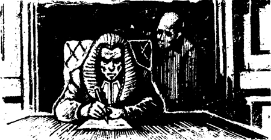
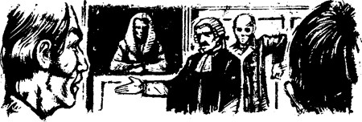
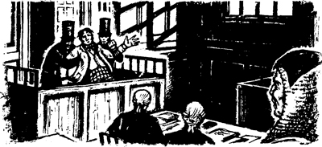

Đến ngày thứ năm diễn ra phiên tòa, luật sư của bên công tố đã mang một bức ảnh nhỏ vào phòng xử án. Đó là bức ảnh của nạn nhân.
‘Người đàn ông hiền lành, tử tế này đã bị chính bạn mình sát hại", luật sư phát biểu. Ông ta đưa bức ảnh cho bồi thẩm đoàn. "Xin hãy nhìn vào nạn nhân", ông ta nói. ‘Các vị phải trở thành đồng minh của ông ấy ngay lúc này.’
Luật sư đưa bức ảnh cho tôi. Đó là bức ảnh của Người đàn ông xanh xao! Tôi có bất ngờ không? Không, chút nào! Nhưng tôi biết một điều. Tôi đã thấy ma rồi!
———
Đêm đó, tôi không tài nào chợp mắt. Tôi nằm trằn trọc trên giường trong Quán rượu London. Tôi nghĩ đến ma quỷ.
Tôi nghĩ đến hai người đàn ông lạ ở Piccadilly. Họ là ai? Cả hai đều là ma sao?
Vào ngày định mệnh của tháng Chín, Người đàn ông xanh xao đã chết. Nhưng tôi đã nhìn thấy ông ta trên phố. Đúng vậy, tôi thấy ông ta đi theo Người đàn ông sợ hãi. Có phải hồn ma của nạn nhân đang theo sau hồn ma của kẻ giết mình không? Không! Vào ngày tháng Chín đó, người bị kết tội không phải là ma. Ông ta vẫn còn sống! Một người đang sống làm sao có thể có ma được?
Tôi tự hỏi. ‘Có ai ở Piccadilly nhìn thấy hai người đàn ông đó không?’
Và tôi đã có câu trả lời. ‘Không! Tôi nhìn thấy họ từ cửa sổ phòng mình. Nhưng không một ai trên phố nhìn thấy họ!’
‘Hai người đàn ông đã nhìn lên cửa sổ phòng tôi", tôi nghĩ. "Người đàn ông sợ hãi nhìn lên, và anh ta sợ tôi. Người đàn ông xanh xao nhìn chằm chằm vào tôi. Ông ấy muốn nói "Hãy nhớ tôi! Xin hãy nhớ tôi! Xin hãy giúp tôi!" Tôi phải giúp ông ấy! Tôi sẽ giúp ông ấy!’
———
Ngày hôm sau là ngày thứ sáu của phiên tòa. Luật sư của bên bị đơn bắt đầu nói chuyện với chúng tôi. Bốn ngày sau đó, luật sư của bên bị đơn thẩm vấn các nhân chứng của mình. Ông ta hỏi họ về bị cáo.
Một nhân chứng phát biểu, ‘Ông ấy là một người đàn ông tốt. Ông ấy không giết bạn của mình.’
Sau đó, luật sư hỏi nhân chứng về nạn nhân. Nhân chứng trả lời, ‘Ông ta là một kẻ độc ác. Ông ta đã làm nhiều việc xấu xa.’
———
Đến ngày thứ bảy của phiên tòa, tôi thấy Người đàn ông xanh xao lần đầu tiên tại tòa án.
Ông ấy có ở phòng xử án trong sáu ngày đầu tiên của phiên tòa không? Có, đúng vậy. Ông ấy đã đẩy tay tôi. Người đàn ông xanh xao ngồi cùng bồi thẩm đoàn. Ông ta là người thứ mười ba. Ông ta đã ở đó. Nhưng tôi không nhìn thấy ông ta một cách rõ ràng. Tuy nhiên, đến ngày thứ bảy, tôi đã nhìn thấy ông ta rất rõ tại tòa án!
Một nhân chứng đang kể với luật sư của bên bị đơn về người đã chết. Nhân chứng là bạn của bị cáo.
‘Người bị giết là một kẻ xấu xa", nhân chứng nói. ‘Có nhiều người muốn giết hắn. Nhưng bạn tôi đã không muốn giết hắn. Ông ấy muốn giúp hắn.’
Bỗng nhiên, bóng ma của nạn nhân đứng ngay cạnh nhân chứng. Bóng ma buồn bã lắc đầu. Nhân chứng không nhìn thấy ông ấy. Các luật sư không nhìn thấy ông ấy. Thẩm phán không nhìn thấy ông ấy, và các thành viên khác trong bồi thẩm đoàn cũng không nhìn thấy ông ấy. Nhưng tôi thì có thể!
Sau đó, ngày nào tôi cũng thấy Người đàn ông xanh xao tại tòa án. Ông ấy luôn đứng cạnh các nhân chứng của bên bị đơn. Họ nói và ông ấy đưa đầu lắc với vẻ mặt buồn bã.
Đôi khi, thẩm phán ghi lại lời khai của các nhân chứng. Khi ấy, Người đàn ông xanh xao sẽ đứng cạnh ghế của thẩm phán và nhìn những gì ông ấy viết. Ông ấy đọc những gì thẩm phán viết và lắc đầu buồn bã.

Không ai trong số những người này nhìn thấy bóng ma. Các nhân chứng không nhìn thấy bóng ma. Nhưng ông ấy đứng ngay cạnh họ. Bỗng dưng, họ im lặng. Thẩm phán không thể nhìn thấy bóng ma. Nhưng bóng ma đứng cạnh ông ấy và thẩm phán ngừng viết. Tôi có thể nhìn thấy bóng ma. Ông ấy bảo với tôi, ‘Những nhân chứng này đang nói dối! Đừng tin họ!’
———
Đến ngày thứ mười của phiên tòa, luật sư của bên bị đơn đã đưa ra bài phát biểu cuối cùng của mình. Khi đó đã là buổi chiều. Vị luật sư chỉ tay vào bị cáo.
‘Người đàn ông này không phải là kẻ giết người", vị luật sư nói. "Ông ấy là một người tốt. Không ai giết bạn ông ấy cả – chính nạn nhân đã tự sát. Ông ấy tự sát bằng chính con dao của mình.’
Ông luật sư nói những lời này rất lớn. Bồi thẩm đoàn vô cùng bất ngờ. Thẩm phán cũng ngạc nhiên. Luật sư của bên công tố rất ngạc nhiên.
Và hồn ma cũng ngạc nhiên! Người đàn ông xanh xao đứng cạnh luật sư của bên bị đơn. Ông ấy lắc đầu. Sau đó, ông ấy giơ tay trái ra đằng sau lưng. Và ông ấy giơ tay phải ra đằng sau lưng.

Người đàn ông xanh xao nhìn tôi. Ông ấy lại nói điều gì đó với tôi. Ông ấy muốn nói, ‘Điều đó không thể nào. Tôi không thể tự sát bằng tay phải được. Và tôi cũng không thể tự sát bằng tay trái được.’ Và đúng là như vậy!
———
Đến ngày thứ mười một, thẩm phán phát biểu với bồi thẩm đoàn. Ông tóm tắt vụ giết người cho chúng tôi. Ông kể về bị cáo, cũng như về nạn nhân. Ông nói với chúng tôi về các nhân chứng.
‘Các nhân chứng nói rất nhiều điều khác nhau’, thẩm phán nói. ‘Họ không thống nhất với nhau. Các vị là bồi thẩm đoàn, phải đưa ra quyết định của mình. Ai đang nói thật? Các vị tin vào nhân chứng nào? Các vị phải đưa ra quyết định. Sau đó, hãy thông báo quyết định đó với tôi.’
‘Nhưng bây giờ đã muộn', thẩm phán nói. ‘Bồi thẩm đoàn, các vị sẽ phải ở lại Quán rượu London thêm một đêm nữa. Ngày mai, các vị phải báo cáo lại quyết định của mình cho tôi. Bị cáo có tội hay không? Chúng ta sẽ sớm biết thôi. Chúc các vị ngủ ngon, bồi thẩm đoàn.’
———
Tối hôm đó, chúng tôi thảo luận về quyết định của mình. Chín người trong chúng tôi nói, ‘Bị cáo có tội. Ông ta đã giết bạn của mình.’ Nhưng ba người - ba gã đần độn - không tin chúng tôi, ‘Không phải như vậy!' họ nói. ‘Nạn nhân đã tự sát.’
Bỗng nhiên, tôi thấy Người đàn ông xanh xao đứng cạnh cửa sổ. Ông ấy chỉ tay vào tôi.
‘Không, nạn nhân không tự sát’, tôi tức giận đáp trả.
Tôi chắp tay ra sau lưng. Tôi đã thấy bóng ma làm vậy. ‘Nhìn này!’ Tôi nói. ‘Điều đó không thể nào.’
Chúng tôi đã nói chuyện trong một giờ liền. Cuối cùng, ba gã đần độn cũng đồng ý với tôi. ‘Bị cáo có tội", họ tuyên bố.
———
Sáng hôm sau, thẩm phán bước vào phòng xử án và ngồi xuống. Bỗng nhiên, Người đàn ông xanh xao đứng cạnh ông ấy. Tiếp đến, bị cáo bước vào. Bóng ma nhìn anh ta và anh ta nhìn bồi thẩm đoàn. Sau đó, ông ấy nhìn thẳng vào tôi. Ông ấy chỉ tay vào tôi. Tiếp theo, ông ấy chỉ vào bị cáo, rồi chỉ vào bản thân ông ấy.
Thẩm phán nói chuyện với tôi.
‘Trưởng bồi thẩm đoàn", ông nói. ‘Bồi thẩm đoàn đã đi đến quyết định chưa? Bị cáo có tội hay không?’
‘Có tội", tôi trả lời. Và ngay lập tức, bóng ma biến mất!
‘Cảm ơn các thành viên bồi thẩm đoàn', thẩm phán nói.
Sau đó, ông ấy nói chuyện với người đàn ông phạm tội giết người.
‘Anh phạm tội giết người", thẩm phán tuyên án. ‘Anh sẽ chết. Anh sẽ bị treo cổ.’
‘Phiên tòa này thật không công bằng!' kẻ giết người kêu lên.
Tiếp đến, kẻ giết người chỉ tay vào tôi.
‘Tôi từng nằm mơ thấy gã đó", hắn hét lên. ‘Tôi chưa từng gặp gã bao giờ. Nhưng trong giấc mơ của tôi, gã đã dùng thòng lọng siết cổ tôi!’
Tên sát nhân gào thét. Hai cảnh sát đã nhanh chóng đưa hắn đi. Rồi mọi người cùng đứng dậy, rời khỏi phòng xử án. Tôi vẫn ở lại.

Tôi đã ngồi trong phòng xử án thêm vài phút. Tôi rất mệt. Đột nhiên, có ai đó đặt tay lên vai tôi. Tôi ngoái lại nhưng không thấy ai cả. Tôi đã ở một mình.